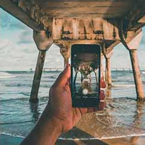

Photography is a way of feeling, of touching, of loving. What you have caught on film is captured forever... it remembers little things, long after you have forgotten everything. When you draw or paint a tree, you do not imitate the tree; you do not copy it exactly as it is, which would be mere photography.
View Our Recent ShotsPhotography is like a moment, an instant. You need a half-second capture people when they are themselves I became passio.
View PortfolioPhotography is like a moment, an instant. You need a half-second capture people when they are themselves I became passio.
View PortfolioPhotography is like a moment, an instant. You need a half-second capture people when they are themselves I became passio.
View PortfolioPhotography is like a moment, an instant. You need a half-second capture people when they are themselves I became passio.
View PortfolioPhotography is like a moment, an instant. You need a half-second capture people when they are themselves I became passio.
View Portfolio